世界文化遺產
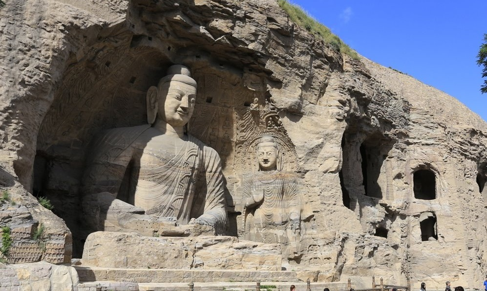
北魏五世紀・曇曜五窟
點擊放大
北魏佛光・雲岡石窟造像
開鑿於西元五世紀，融合印度犍陀羅藝術與中原漢風。五萬餘尊栩栩如生的石雕佛像，凝結北魏王朝橫跨東西的恢弘氣魄
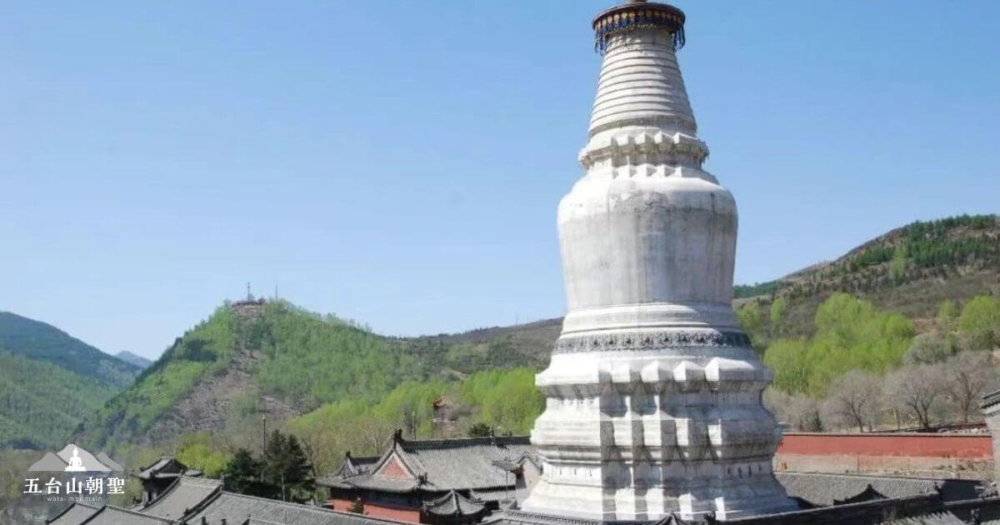
踏訪五千年華夏文明的露天博物館
北魏雲岡石窟的微笑、懸空絕壁上的神工奇蹟、應縣木塔的千年不朽、金五台文殊道場的晨鐘，以及黃河壺口驚濤駭浪的磅礴交響
深度走進東方古建第一大省，將課本中的歷史化為眼前觸手可及的宏偉傳奇

開鑿於西元五世紀，融合印度犍陀羅藝術與中原漢風。五萬餘尊栩栩如生的石雕佛像，凝結北魏王朝橫跨東西的恢弘氣魄
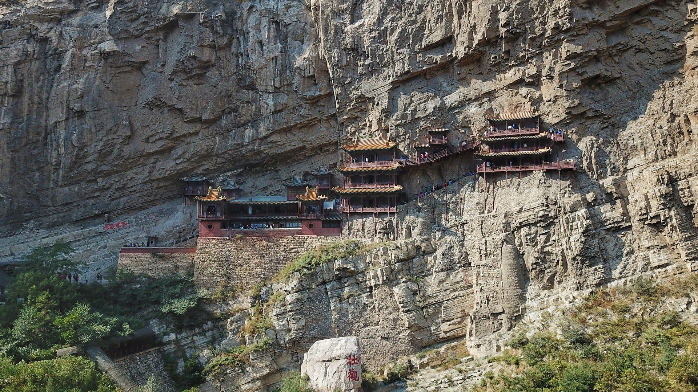
立於金龍峽谷仰望翠屏峰，遠眺如壁畫般懸嵌於萬仞峭壁的千年奇觀（全景外觀遠眺最佳視角）；以及全棟無鐵釘、歷經千年強震依然巍然聳立的世界最高純木佛塔
中國佛教四大名山之首。塔院寺大白塔佛光普照、黛螺頂纜車登臨小朝台，朝拜文殊五方聖境，感受滌蕩心靈的梵音清幽
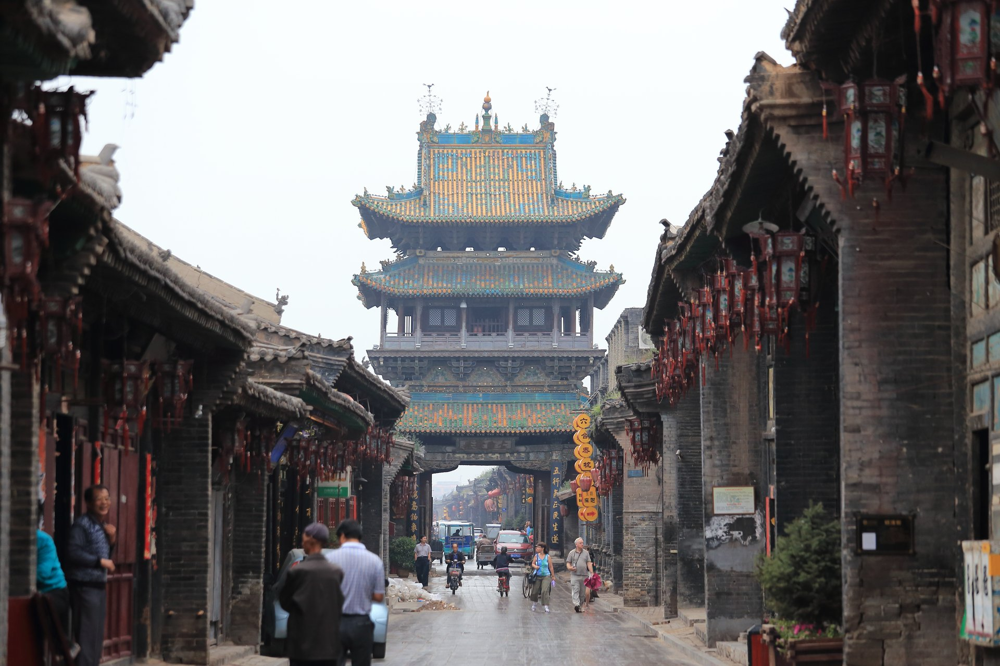
保存最完好的明清古縣城。走訪日昇昌票號溯源匯通天下傳奇，夜賞王潮歌導演大型情境沉浸大戲《又見平遙》，重現血性晉商魂
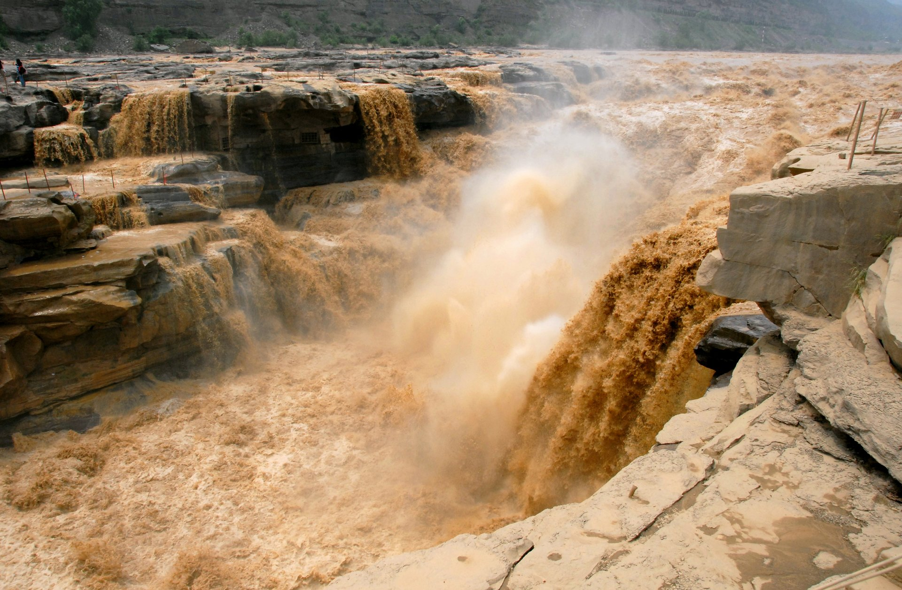
黃河之水天際湧來，千里巨流驟縮於石槽，掀起萬丈金濤！特別安排搭乘「龍洞電梯」直落水底崖壁，仰望飛瀑撼天動地的極限震撼
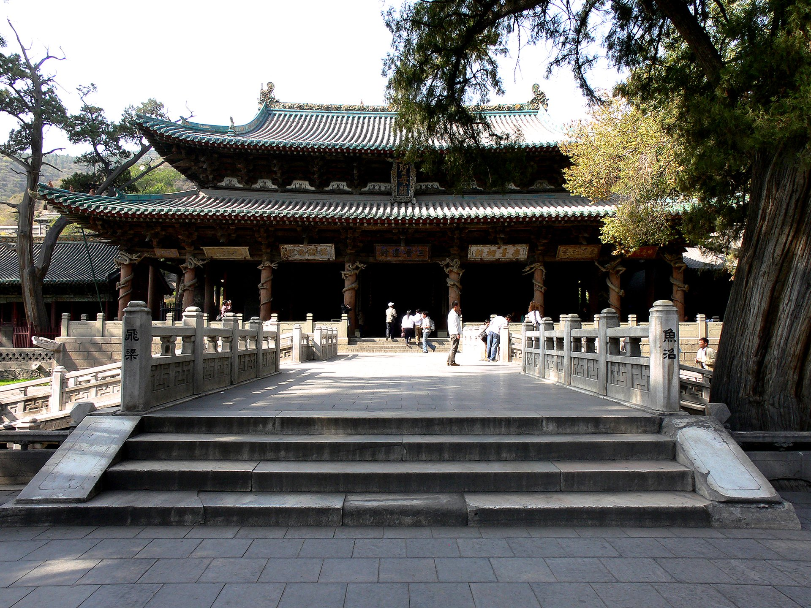
被譽為「東方彩塑藝術寶庫」的雙林寺兩千多尊明代泥塑神像，以及太原三晉文脈之源「晉祠」千年難老泉與宋代聖母殿侍女像
精選中國東方航空精準串聯，搭配第 7 天「高鐵尊榮體驗」與「行李專車直送太原」，極致省力舒心
從北魏塞外古都、中原佛國勝境到晉商富甲天下，為您精心規劃流暢而充裕的深度巡禮
今日於台北松山機場集合，搭乘優質客機經上海浦東轉機，飛往昔日北魏王朝的帝都、明清九邊之首重鎮——【大同】。抵達後由專業遊覽車接機直奔大同古城核心，入住五星規格酒店，為接下來七天震撼的歷史行旅儲備充沛體力
夜幕降臨時抵達，大同古城牆與四牌樓燈火輝煌，古都沉靜威嚴的歷史氣場撲面而來
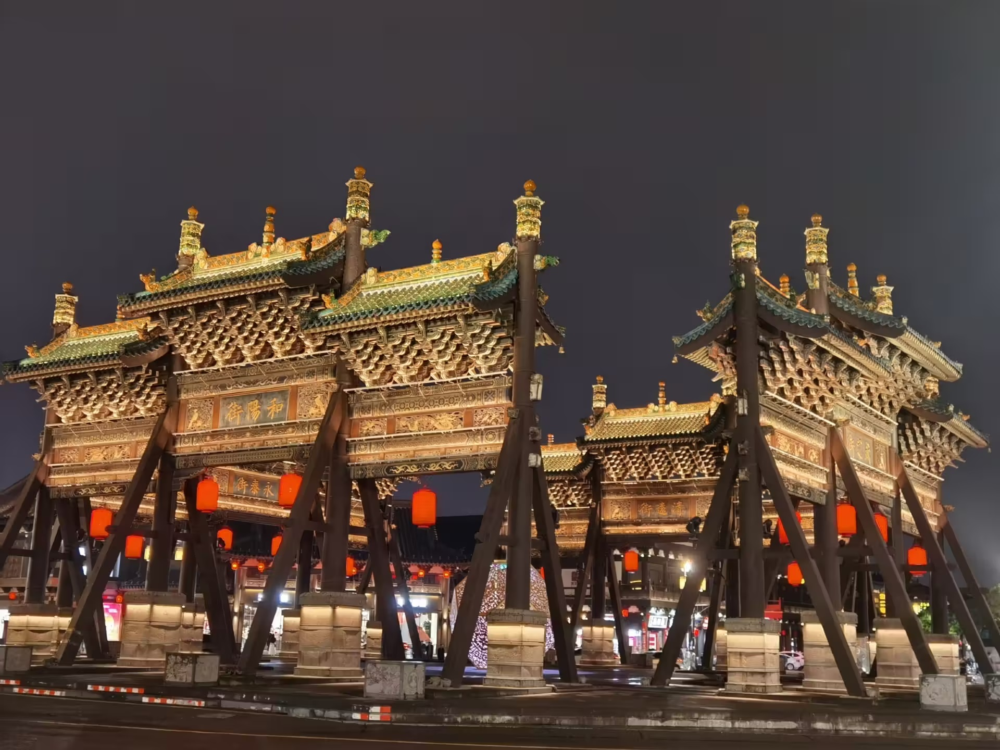
晨間走進世界文化遺產【雲岡石窟】，親睹開鑿於北魏和平年間的曇曜五窟，宏偉的大佛造像慈悲祥和，見證東西方絲路文明的交會；午後前往渾源縣，於金龍峽谷絕佳視角仰望【懸空寺】，遠眺這座凌空懸掛千五百年、如燕巢嵌壁的神工奇景（採全景外觀遠眺不登樓，視野最完整且免受排隊壅塞之苦），隨後特別安排搭乘【恆山纜車上下】登臨北嶽名山，回程飽覽大同古城夜景
主要洞窟 45 座，石雕造像 59,000 餘尊，第 20 窟露天釋迦牟尼大佛更是雕刻藝術的巔峰代表
李白手書「壯觀」、徐霞客譽為「天下巨觀」的半空奇構！行程特別安排於金龍峽谷最佳觀景台【遠眺全景】——正所謂「不識廬山真面目，只緣身在此山中」，唯有自谷底遠觀仰望，方能全幅收攬「半插飛樑為基、巧借岩石為托」懸嵌於萬仞絕壁的全局震撼，定格最具代表性的明信片級視角；為維護古蹟安全並免去狹窄棧道長達數小時之排隊壅塞，本行程參觀為外觀遠眺，不安排登樓走木棧道，讓您安全從容飽覽絕景
特別包含恆山風景區景交車與雙程纜車上下，直登五嶽之一北嶽恆山，俯瞰塞外群峰與險峻峽谷，免去長途跋涉階梯，輕鬆飽覽山川形勝
揮別大同南下，來到應縣瞻仰舉世聞名的【佛宮寺釋迦塔（應縣木塔）】。這座建於遼代的全木構奇塔高達 67.3 公尺，純以斗拱榫卯接合，連梁思成大師都為其傾倒讚嘆！隨後翻越勾注山，走訪名震千古的邊塞門戶【雁門關】，緬懷楊家將忠勇衛國的熱血事蹟，傍晚進入佛國聖地五台山，入宿五星萬豪酒店
歷經大地震、戰火砲擊依然屹立不倒近千年，五層六簷、54種斗拱榫卯構造，為東方古建築奇蹟
長城重要關隘，登高遠眺崇山峻嶺間的雄關要塞、敵樓與翁城，感受古戰場的磅礴蒼茫
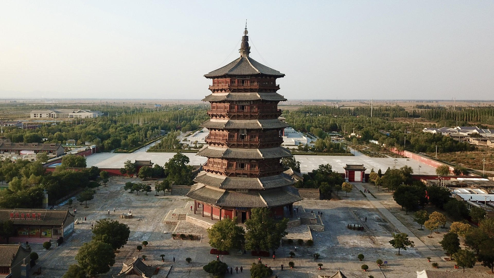
今日整日徜徉於中國四大佛教名山之首【五台山】。作為大智文殊菩薩之道場，這裡香煙裊裊、梵音繚繞。巡禮五台山象徵【塔院寺大白塔】、規模最宏大的【顯通寺】、供奉最大蕎麵文殊菩薩的【殊像寺】以及香火最鼎盛的【五爺廟】。特別安排搭乘【黛螺頂纜車上下】，輕鬆登頂登臨「小朝台」，朝拜五方文殊
菩薩頂（黃廟之首、清代皇家行宮）、顯通寺（全銅鑄造大殿與無樑殿）、塔院寺（通高75公尺之釋迦舍利靈塔）
特別含雙程纜車上下，體力無負擔即可登頂黛螺頂五方文殊殿，圓滿朝聖功德
告別五台山前往山西省會太原，遊覽被譽為「不到晉祠，枉到太原」的【晉祠】。欣賞宋代聖母殿、千年難老泉與周柏唐槐三大國寶絕景。午後抵達名揚四海的世界遺產【平遙古城】，免去搬運行李之苦，換搭景區電瓶車入城；傍晚重頭戲：觀賞由王潮歌導演傾力打造的中國首部大型室內情境體驗劇《又見平遙》，跟隨演員穿越時空走入晉商票號的義薄雲天！
宋代木構聖母殿、雕樑畫棟的飛梁魚沼，以及侍女塑像細膩傳神的面部神態
不設傳統觀眾席，觀眾邊走邊看，沉浸式親歷趙東家以血肉之軀護送同興公鏢局分號血脈還鄉的感人史詩
清晨漫步於青磚瓦舍的【平遙古城】，登上俯瞰全城的龜甲古城牆、探訪古代金融開山鼻祖【日昇昌票號】、保存完好的平遙縣衙。隨後造訪東方彩塑寶庫【雙林寺】，瞻仰令全球藝術家驚嘆的韋馱像；午後驅車前往洪洞，參觀世界最高五彩琉璃寶塔【廣勝寺飛虹塔】，並於華夏子孫尋根聖地【洪洞大槐樹】緬懷明初大移民歷史，晚間入住臨汾古城大院酒店
中國第一家專營匯兌的金融機構，「匯通天下」開創了近現代商業銀行之雛型
央視 86 版《西遊記》掃塔取寶取景地，全身以黃、綠、藍三彩琉璃燒製，日光下絢麗奪目！
今日迎來整個行程的視覺高潮——【黃河壺口瀑布】！巨浪滔滔的黃河奔流至此，水面由四百米驟縮至五十米，形成「萬馬奔騰、千里一壺」的天下奇景。特別安排搭乘【龍洞電梯】下至黃河水面以下的天然岩洞，在飛流直下的瀑布底端，仰天感受黃河怒濤拍岸的雷霆萬鈞！傍晚搭乘舒適高鐵直奔太原，行李由專車運送，尊爵體驗
水底冒煙、彩虹通天、旱地行船三大奇觀。龍洞電梯讓您直達瀑布心臟地帶，零距離感受母親河的呼嘯
避開長途遊覽車夜間長途勞頓，省時舒適；大件行李專車先行送抵太原飯店房間，無後顧之憂
清晨在飯店悠閒享用早餐，整理滿載山西名產（平遙牛肉、太原老陳醋）與感動回憶的行囊。專車前往機場，辦理離境手續，搭乘東方航空客機經由上海浦東轉機飛返台北桃園機場。結束這趟穿越三千年歷史、涵蓋古建、石窟、佛國與黃河名勝的山西全覽壯麗行旅！
帶著滿滿的相片與古建感動，期待與同好好友分享這段難忘的晉地尋古傳奇
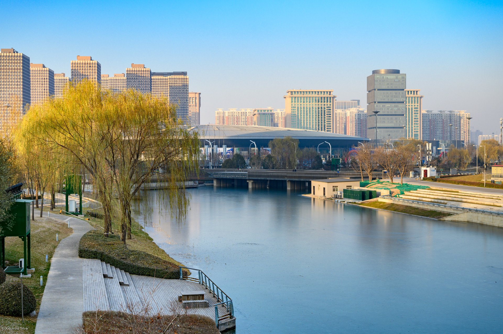
嚴選古城名邸、國際連鎖度假品牌與晉南大院博物館酒店，讓您每一晚皆能舒心安歇
坐落於大同古城核心風貌區，步行即可漫遊古城夜景與華嚴寺街區。傳統北方中式院落典雅融合現代五星奢華衛浴設施，連住兩晚舒適免移行李
萬豪國際集團旗下頂級度假酒店。坐擁五台山翠綠山巒全景，客房溫馨寬敞，配備招牌萬豪天夢之床與頂級地暖設施，於佛國聖山盡享無微不至的尊榮呵護
精選古城內杏花村客棧、花築奢·平園公府或陶唐精舍。明清晉商四合院大宅門沉浸式體驗，紅燈籠高掛、古色古香雕花木床結合現代衛浴，重溫晉商大家風範
融晉南民居建築精華與博物館收藏於一體的特色五星酒店。大院青磚雕刻深邃，文化底蘊豐富，為隔日遊覽壺口瀑布提供最恬靜舒適的安眠環境
國際凱悅酒店集團時尚奢享品牌。寬敞明亮的當代都會設計、舒適沙發與凱悅尊榮睡床，臨近太原高鐵南站與機場，為旅途最後一晚畫下完美句點
點擊任一精彩相片即可開啟高解析全螢幕模式，預習這趟視覺饗宴
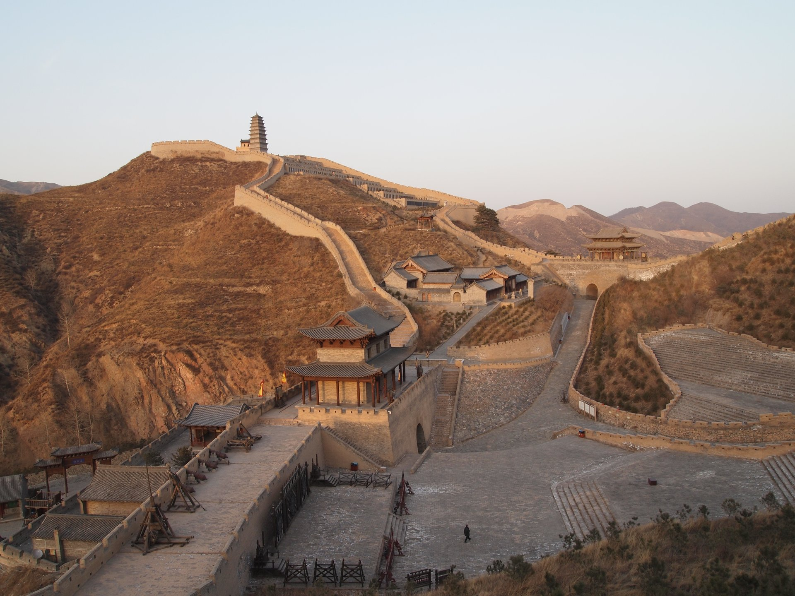
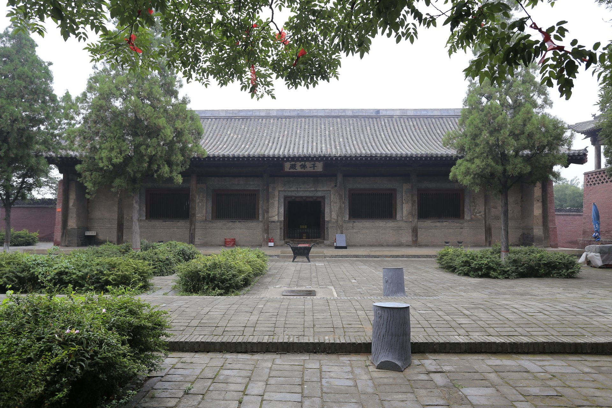
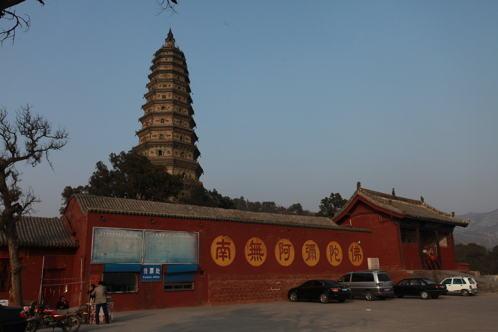
掌握 11 月山西初冬氣候特點、高原注意事項與特色美食，讓旅程萬無一失
11 月下旬山西早晚氣溫較低（白天約 5~12°C，夜間約 -5~0°C），北方氣候乾爽晴朗。建議採洋蔥式穿法，攜帶防風羽絨外套、保暖毛帽、圍巾、保濕護唇膏與防滑健走鞋
五台山台懷鎮海拔約 1,000~1,500 公尺，一般遊客皆無高原反應。本行程已特別包含黛螺頂雙程纜車與恆山纜車，省去大量爬階負擔，長輩同行亦輕鬆從容
世界麵食在中國，中國麵食在山西！行程特別安排刀削麵、剔尖、莜麵栲栳栳、平遙五香牛肉、晉祠太原老陳醋宴，餐標高達 60~80 RMB/人，兼顧精緻與道地風味
第 7 天自壺口瀑布搭乘高鐵返回太原時，大件行李由專用行李車直接托運至太原飯店。您僅需隨身攜帶貴重物品與外套，享受輕鬆愜意的高鐵體驗
懸空寺木棧道狹隘且長年實施嚴格承載限流，登樓往往需排隊數小時；本行程規劃於金龍峽谷最佳觀景仰角「外觀遠眺」，此視角能全幅欣賞整座寺院懸掛絕壁之壯闊全局，是拍攝全景的最佳機位，行程不安排登樓走木棧道，讓參觀步調更從容舒適
特別安排王潮歌導演代表作《又見平遙》大型情境實景劇；劇場採突破傳統的「行進式觀演」，觀眾將走入不同主題街區與鏢局場景中與演員近距離互動，建議穿著舒適平底好走的鞋款，全情沈浸於晉商血脈傳承的震撼史詩